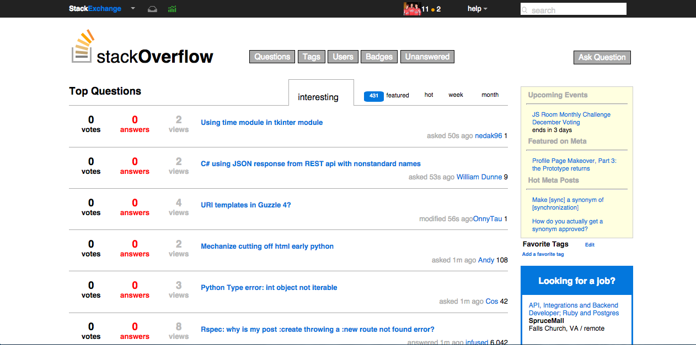

Stephen Neubig
Proud Hokie | CSS Fanatic | Sports Enthusiast
About Me

Full Stack Web Developer
Full stack web developer with a marketing touch, passionate and loyal to the brands, products, and communities I admire. Motivated by innovative thought and engaging communication, I build captivating experiences that enhance the overall brand awareness.
Projects

Big Design
https://github.com/sneubig/Big-DesignSummary: I wanted to create a project that focused on refining my JavaScript, while using my passion for CSS to create a realistic experience. I'm proud of the fact that no images were used for this project, it's all CSS styling.

Cirrus Weather
https://github.com/pmills88/Cirrus-WeatherSummary: This was a group project with 3 other students over four days. My responsibilities included helping with the front-end, and doing all the SVG animations.

CSS StackOverflow
https://github.com/sneubig/css_stackoverflowSummary: Recreated the StackOverflow homepage using CSS.
Skills
Languages
- Ruby
- JavaScript
- SQL
- HTML
- CSS
Libraries/Frameworks
- Rails
- jQuery
- Angular
- Sinatra
- Rspec
- Ajax
- underscore.js
- backbone.js
- Sass
- Foundation
Management/Deployment
- Git
- Heroku
- Pivotal Tracker
Methodologies
- TDD
- REST
- MVC
- OOP